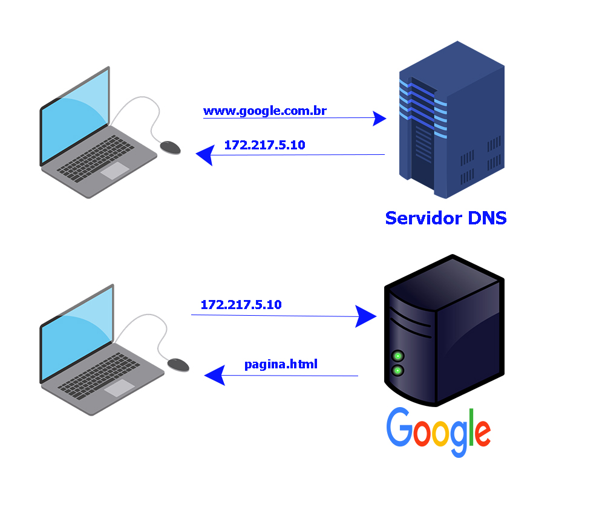
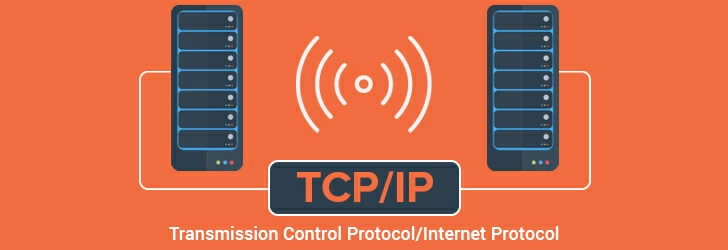
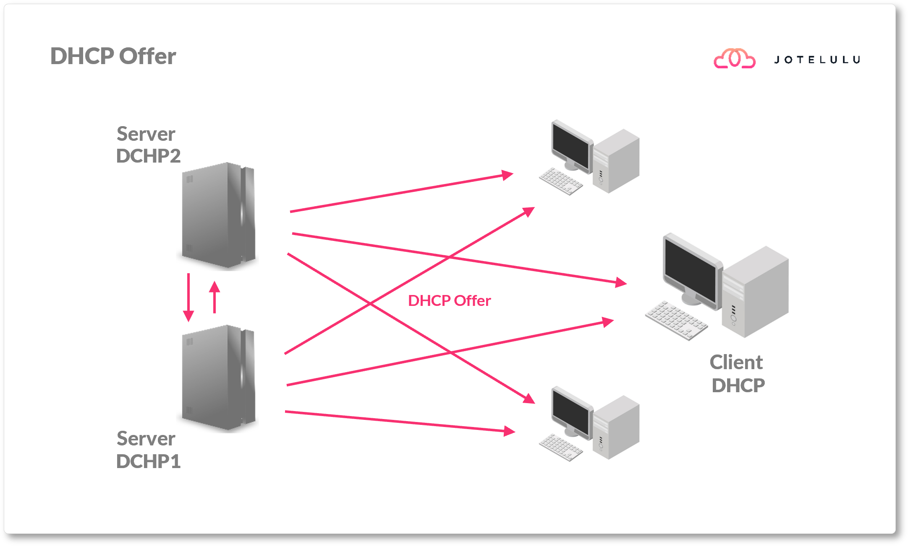
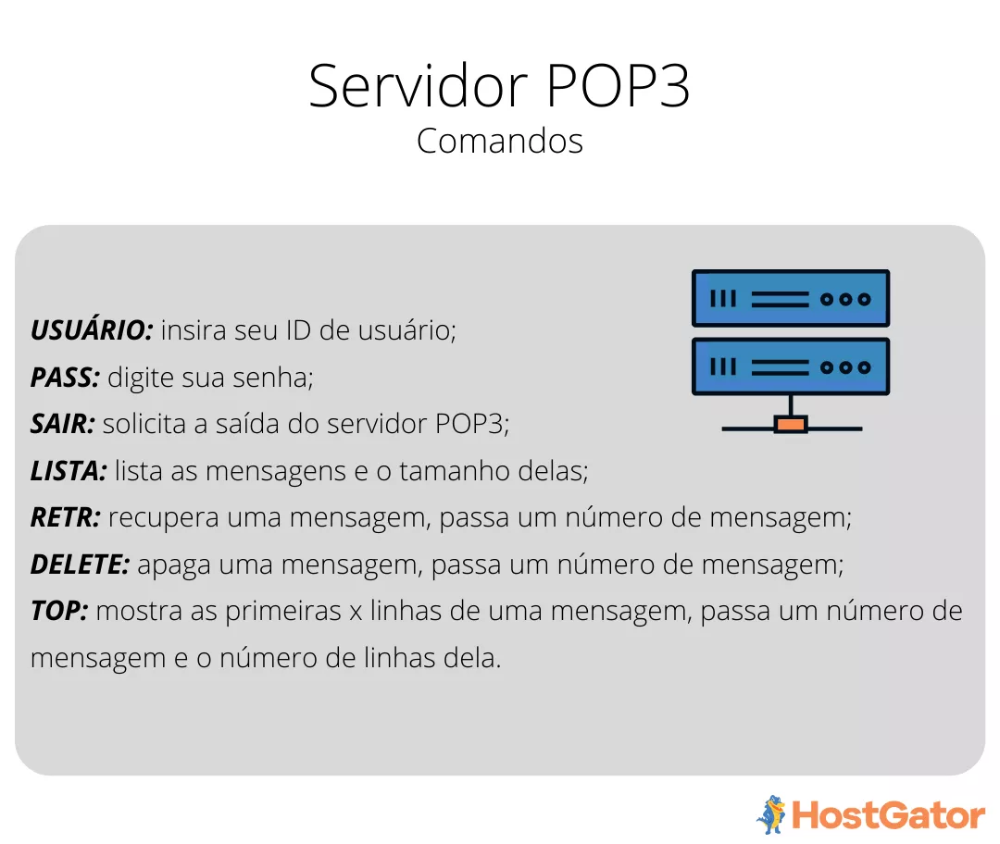
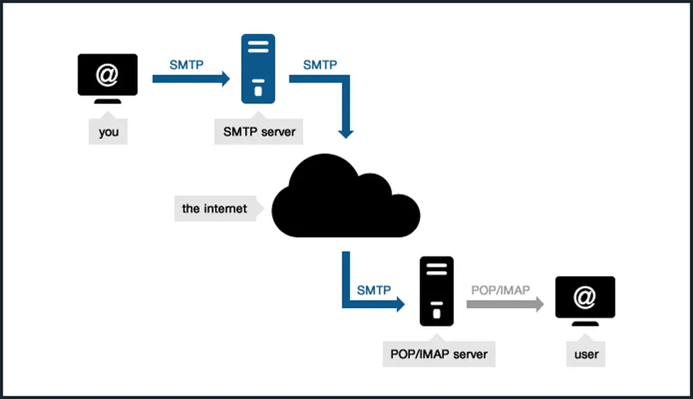
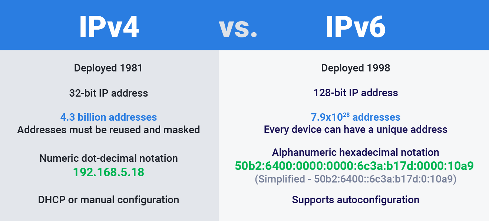
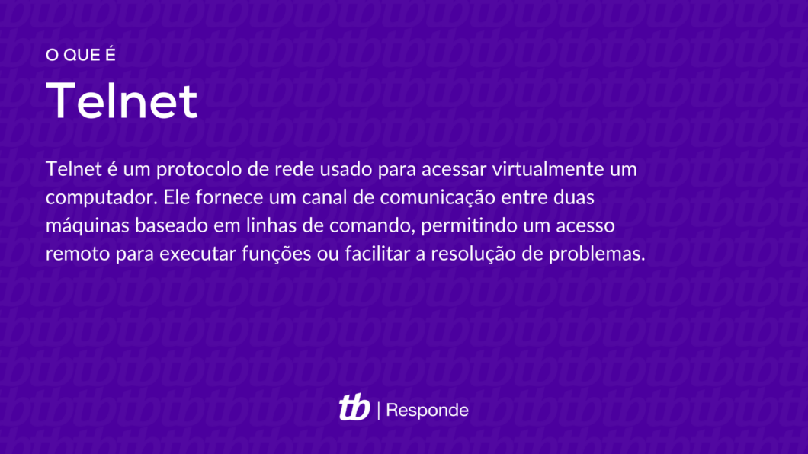
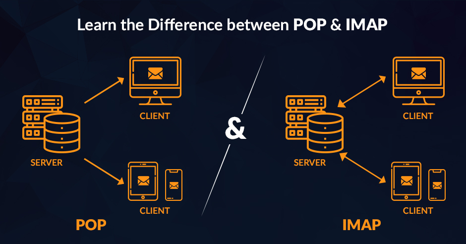
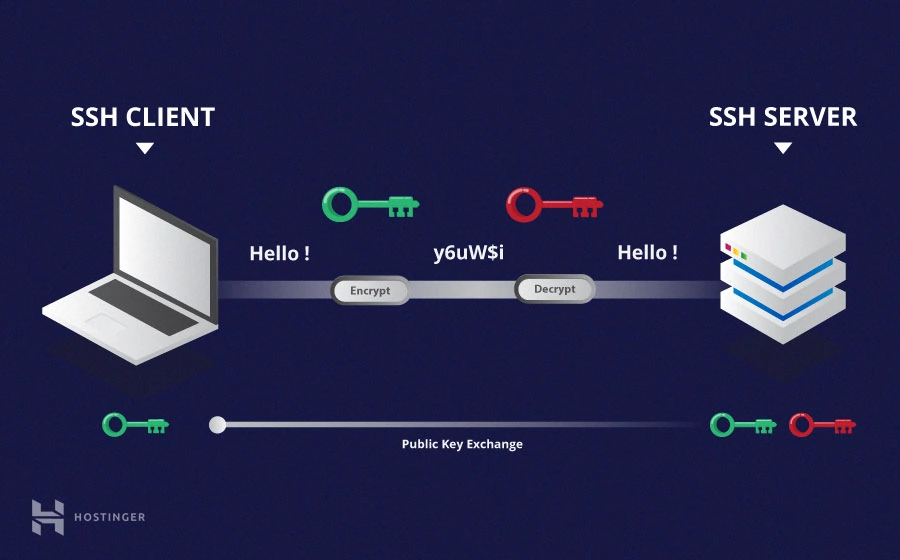

PROTOCOLOS DE REDES
Marcio, Alexandre e Pedro B. - 1°A
| Protocolo | Função | Ação |
|---|---|---|
| HTTP(S) | Protocolo de transferência de hipertexto. | Ver detalhes |
| FTP | Protocolo de transferência de arquivos. | Ver detalhes |
| DNS | Serviço de nomes de domínio. | Ver detalhes |
| TCP | Protocolo de controle de transmissão. | Ver detalhes |
| DHCP | Protocolo de IP automático. | Ver detalhes |
| IP (V4, V6) | Protocolos que ajudam a localizar e conectar dispositivos na internet. | Ver detalhes |
| SMTP | Protocolo que envia e-mails. | Ver detalhes |
| POP3 | Este protocolo é como um “transportador” de e-mails. | Ver detalhes |
| TELNET | É como um telefone para controlar outros computadores de longe. | Ver detalhes |
| IMAP | Protocolo que permite acessar seus e-mails sem precisar baixá-los. | Ver detalhes |
| SSH | É como o TelNet, mas pode acessar os computadores com uma maior segurança. | Ver detalhes |
Mais Informações
| ENTENDA MELHOR: |
HTTP(S)
HTTP(S) - Hypertext Transfer Protocol (Secure)
O que é HTTP?
O HTTP(HyperText Transfer Protocol) o principal protocolo usado para enviar dados entre um navegador web e um site, tendo também sua versão mais segura o HTTPS(HyperText Transfer Protocol Secure) ele utiliza a porta 443 diferenciado-se de sua outra versão que utiliza a porta 80.
Como funciona?
Ele usa um protocolo de criptografia para guardar e proteger as comunicações(Transport Layer Security(TLS)), ele usa uma infraestrutura de chave publica assimétrica, normalmente esse sistema usa duas chaves diferentes para criptografar(chave pública: esta chave está disponível para todos que desejam interagir com o servidor de forma segura; chave privada: esta chave é controlada pelo proprietário de um site e é mantida, como o leitor pode imaginar, privada. Essa chave reside em um servidor web e é usada para descriptografar informações criptografadas pela chave pública). O HTTPS é fundamental na proteção de suas informações na web.

Imagem tirada do site: https://www.semrush.com/blog/what-is-https/Fechar detalhes
FTP - File Transfer Protocol
O que é o FTP?
FTP ou File Transfer Protocol (Protocolo de Transferência de Arquivos), é um protocolo de rede utilizado para transferir arquivos entre um cliente e um servidor em uma rede de computadores, como a internet. Criado nos anos 70, ele é um dos métodos mais antigos e ainda amplamente usado para movimentar dados de um local para outro, especialmente em ambientes empresariais e de desenvolvimento de websites. Com o FTP, é possível enviar, baixar, renomear, excluir e organizar arquivos em um servidor remoto.
Como funciona?
O funcionamento do FTP se baseia em uma conexão entre dois pontos principais: um cliente (que normalmente é o dispositivo do usuário) e um servidor de arquivos. Para iniciar uma sessão FTP, o cliente se conecta ao servidor usando credenciais de login, como um nome de usuário e senha. Algumas sessões FTP permitem acesso anônimo, onde não são exigidas credenciais, mas isso depende das configurações de segurança do servidor.
Exemplo de uso:
As transferências em FTP podem ser feitas no modo texto (ASCII) para arquivos de texto ou no modo binário para arquivos executáveis, imagens e outros formatos. O cliente FTP envia uma solicitação de transferência, e o servidor responde, concluindo a ação.

Imagem tirada do site: https://blog.task.com.br/o-que-e-ftp/Fechar detalhes
DNS - Domain Name System
O que é DNS?
DNS(Domain Name System ou Sistema de nome de domínio) ele traduz nomes de sites em endereços de IP, ele é como uma “agenda de contato”.
Como funciona?
Quando um usuário digita um domínio na barra de endereços do navegador, ocorre uma consulta DNS:
Consulta ao Cache Local, o sistema verifica se o endereço IP correspondente ao domínio já está armazenado no cache do dispositivo;
Servidor DNS Recursivo, Se não estiver no cache, a consulta vai para um servidor DNS recursivo, geralmente configurado pelo provedor de internet;
Servidores Autoritativos, Caso o servidor recursivo também não tenha o endereço, ele consulta servidores autoritativos, incluindo o servidor raiz, o TLD (Top-Level Domain, como .com, .org), e finalmente o servidor autoritativo do domínio específico. Um exemplo de uso é quando abrimos um site web como o youtube ou twitch.
Imagem tirada do site: https://www.maintutoriais.com.br/2022/08/o-que-e-dns-como-funciona-e-sua-importancia.htmlFechar detalhes
TCP - Transmission Control Protocol
Protocolo de comunicação orientado à conexão, garantindo a entrega dos pacotes de dados.
Operação: Divide os dados em pacotes, e garante que a transmissão seja realizada de forma ordenada e sem erros.
Imagem tirada do site: https://www.net-usb.com/pt/usb-over-ip/what-is-tcp-ip/Fechar detalhes
DHCP - Dynamic Host Configuration Protocol
O DHCP (Dynamic Host Configuration Protocol) é um protocolo de rede que automatiza a atribuição de endereços IP e outras configurações de rede para dispositivos em uma rede, Em vez de configurar manualmente cada dispositivo com um endereço IP.
Como funciona o DHCP?
O DHCP opera por meio de um processo de "oferta e concessão" entre o dispositivo que solicita o IP (chamado cliente DHCP) e o servidor DHCP. Quando um dispositivo se conecta a uma rede, ele envia uma mensagem de "descoberta DHCP" em busca de um servidor DHCP. Ao receber essa mensagem, o servidor DHCP responde com uma "oferta DHCP", contendo um endereço IP disponível e outras configurações de rede. Se o dispositivo aceita, ele responde com uma mensagem de "solicitação DHCP" e, finalmente, o servidor confirma a concessão do IP com uma "confirmação DHCP".
Exemplos de uso:
Em redes domésticas, o roteador age como servidor DHCP, atribuindo automaticamente endereços IP para dispositivos como laptops, smartphones e impressoras.
Imagem tirada do site: =https://jotelulu.com/pt-pt/blog/o-que-e-dhcp-e-para-que-serve/Fechar detalhes
POP3 - Post Office Protocol 3
O que é POP3?
O POP3 (Post Office Protocol version 3) é um protocolo de recebimento de e-mails que permite que o usuário baixe mensagens do servidor de e-mail para o seu computador ou dispositivo, geralmente para lê-las offline. Esse protocolo é utilizado por programas de e-mail, como Microsoft Outlook e Mozilla Thunderbird, e seu principal objetivo é transferir e-mails do servidor para o dispositivo do usuário, proporcionando acesso direto e armazenamento local das mensagens.
Como funciona?
O funcionamento do POP3 envolve a conexão entre o cliente de e-mail e o servidor de e-mail. Quando o usuário abre o cliente e solicita a verificação de novas mensagens, ele se conecta ao servidor POP3, que verifica as credenciais de login. Após a autenticação, o servidor baixa as mensagens para o dispositivo do usuário e, geralmente, as apaga do servidor, mantendo-as disponíveis apenas no dispositivo em que foram baixadas. Isso permite que os e-mails sejam acessados offline e libera espaço no servidor.
Imagem tirada do site: https://www.hostgator.com.br/blog/entenda-protocolo-pop3/Fechar detalhes
SMTP - Simple Mail Transfer Protocol
O que é SMTP?
SMTP (Simple Mail Transfer Protocol) é um protocolo de comunicação que permite a troca de emails entre servidores de maneira rápida e organizada. Ele é utilizado para o envio de emails, facilitando o transporte de mensagens eletrônicas de um servidor para outro até que cheguem ao destinatário.
Como funciona?
Quando uma pessoa envia um email, o cliente de email (como Outlook ou Gmail) se comunica com o servidor SMTP configurado para iniciar o processo de envio. O SMTP então verifica o endereço do remetente e do destinatário e tenta estabelecer uma conexão com o servidor SMTP do destinatário. Durante esse processo, o SMTP usa uma série de comandos para confirmar a entrega da mensagem e para verificar erros. Caso o servidor do destinatário esteja disponível, o email é transferido diretamente. Se não estiver, o SMTP retenta a entrega em intervalos regulares ou armazena a mensagem até que o servidor esteja acessível. Isso garante que os emails cheguem ao seu destino, mesmo que o processo leve algumas tentativas.
Imagem tirada do site: https://www.techtudo.com.br/noticias/2016/03/o-que-e-sigla-smtp-no-hotmail-saiba-para-o-que-serve.ghtmlFechar detalhes
IP(v4, v6)
O que é e como funciona?
O Protocolo de Internet (IP) é um conjunto de regras que governa como os dados são enviados e recebidos na rede. Todo dispositivo conectado à internet possui um endereço IP que o identifica de forma única, permitindo o roteamento das informações até ele. Existem duas versões de IP em uso: IPv4 e IPv6:
O IPv4: é mais antigo e é representado por quatro números; IPv6:é atual e é representado por seis números;
Exemplos de uso:
Os endereços IP são usados diariamente para a navegação na internet, seja para acessar sites, realizar downloads ou assistir a vídeos. Em uma rede doméstica, por exemplo, o roteador utiliza IPs privados em IPv4 para organizar a comunicação entre dispositivos como computadores e smartphones.
Imagem tirada do site: https://www.avast.com/pt-br/c-ipv4-vs-ipv6-addressesFechar detalhes
TELNET
O que é o TELNET?
O Telnet é um protocolo de rede usado para fornecer acesso remoto a dispositivos ou sistemas através de uma conexão de terminal. Ele foi amplamente utilizado no passado para gerenciar servidores e dispositivos de rede, permitindo que um usuário controlasse um sistema de forma remota, como se estivesse usando o terminal diretamente no dispositivo.
Como funciona?
O funcionamento do Telnet envolve a criação de uma sessão de terminal virtual entre o dispositivo cliente e o servidor. O usuário se conecta ao servidor Telnet fornecendo o endereço IP ou o nome do host e, em seguida, autentica-se com um nome de usuário e senha. Uma vez autenticado, o usuário pode executar comandos e interagir com o sistema remoto como se estivesse localmente conectado. O Telnet usa uma conexão TCP na porta 23, mas, por ser um protocolo sem criptografia, todas as informações, incluindo senhas, são transmitidas de forma legível, o que o torna inseguro para uso em redes públicas ou para tarefas sensíveis.
Exemplos de uso:
Apesar de o Telnet ser considerado obsoleto e inseguro, ele ainda é usado em algumas situações específicas, como para testar conexões de rede e diagnosticar problemas com servidores, portas de rede e dispositivos de rede, devido à sua simplicidade e baixo overhead. Além disso, alguns equipamentos de rede, como roteadores e switches, ainda podem ser acessados via Telnet, embora a tendência seja substituir esse método por alternativas mais seguras, como o SSH.
Imagem tirada do site: https://tecnoblog.net/responde/o-que-e-telnet/Fechar detalhes
IMAP - Internet Message Access Protocol
O que é o IMAP?
O IMAP( Internet Message Access Protocol) é um protocolo de comunicação utilizado para acessar e gerenciar e-mails em servidores remotos. Ele permite que os usuários leiam, movam, excluam e organizem mensagens de e-mail diretamente no servidor, sem a necessidade de baixar os e-mails para o dispositivo local. O IMAP é amplamente utilizado em serviços de e-mail modernos, pois permite uma sincronização eficiente entre diversos dispositivos, mantendo os e-mails armazenados no servidor.
Como funciona?
Quando um cliente de e-mail se conecta ao servidor via IMAP, ele pode visualizar a caixa de entrada e outras pastas, como "Enviados" ou "Rascunhos", sem precisar baixar todas as mensagens. Ao abrir um e-mail, o conteúdo é baixado temporariamente, mas ele não é removido do servidor, permitindo que o usuário acesse a mesma mensagem em outro dispositivo ou cliente de e-mail sem problemas.
Vantagem do IMAP
Além disso, o IMAP oferece a capacidade de organizar as mensagens em pastas no servidor, facilitando a organização de e-mails de maneira centralizada. As ações realizadas, como marcar
Imagem tirada do site: https://www.tvisha.com/blog/pop-and-imapFechar detalhes
SSH - Secure Shell
O que é?
O SSH (Secure Shell) é um protocolo de rede usado para acessar de forma segura dispositivos remotos, como servidores, pela internet ou uma rede local. Ele permite que você faça login em uma máquina remota e execute comandos nela, de forma criptografada, o que garante a proteção contra interceptação ou ataques de "man-in-the-middle". O funcionamento do SSH baseia-se em um sistema de autenticação por chave criptográfica ou senha.
como funciona?
Quando você conecta a um servidor usando SSH, o cliente SSH e o servidor realizam um processo de troca de chaves para estabelecer uma conexão segura. O servidor envia sua chave pública para o cliente, e o cliente usa essa chave para criptografar uma mensagem que só pode ser decifrada com a chave privada do servidor. Isso garante que a comunicação entre os dois dispositivos seja confidencial e autêntica.
A autenticação geralmente é feita de duas formas: por senha ou por chave pública. No método de chave pública, o cliente tem uma chave privada no seu computador e uma chave pública armazenada no servidor. Quando o cliente tenta se conectar ao servidor, ele usa a chave privada para criar uma assinatura digital, que o servidor verifica usando a chave pública associada. Se a assinatura for válida, a conexão é estabelecida sem a necessidade de uma senha.
Vantagens do SSH
Uma das vantagens do SSH é que ele também permite o encaminhamento de portas (port forwarding), o que significa que você pode redirecionar tráfego de rede de forma segura entre o cliente e o servidor. Isso é útil, por exemplo, para acessar serviços internos de um servidor sem expô-los diretamente à internet.
Imagem tirada do site: https://www.hostinger.com.br/tutoriais/como-funciona-o-sshFechar detalhes